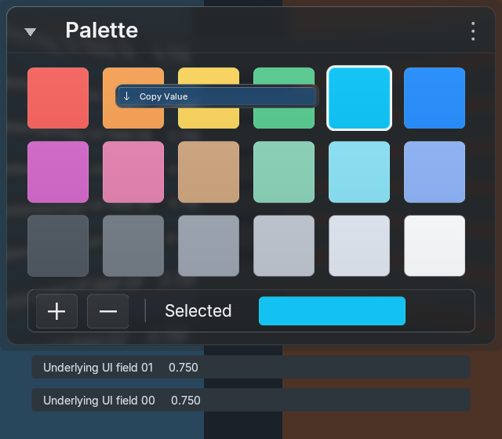
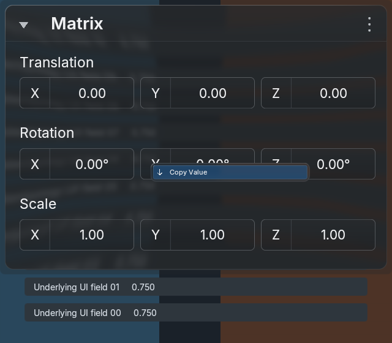
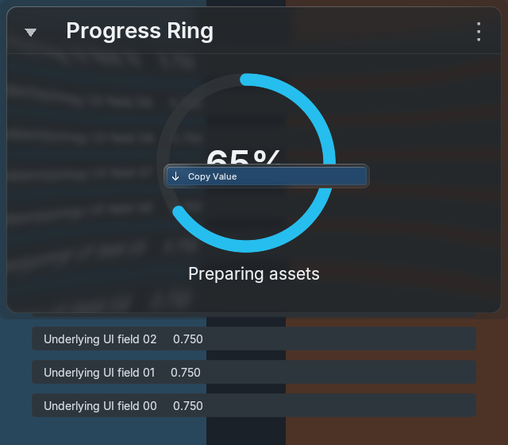
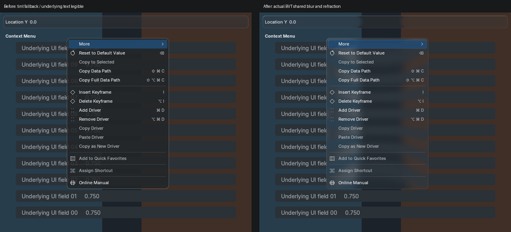
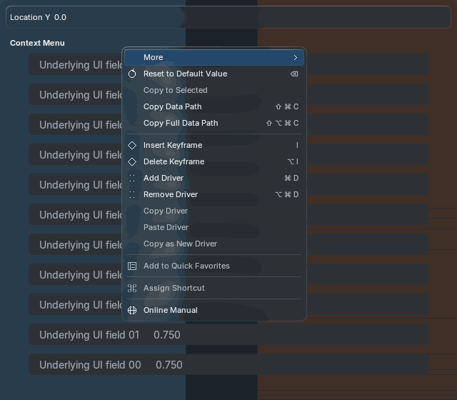
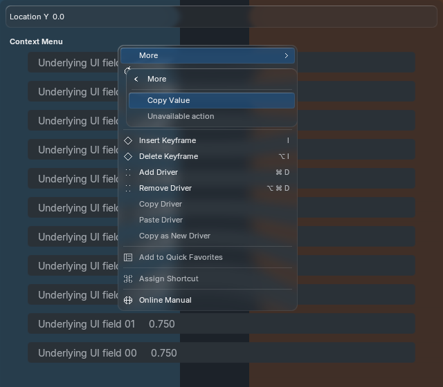
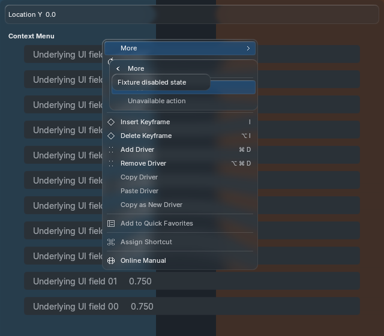
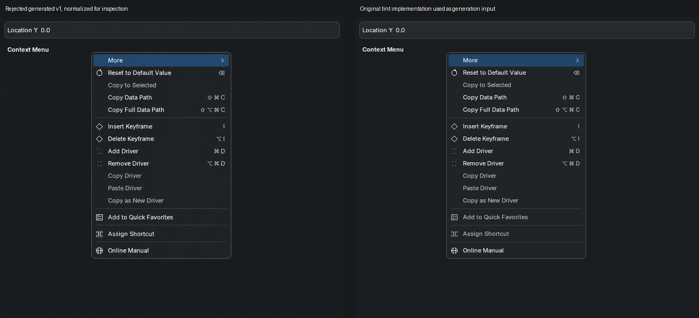

Actual Blender 5.2.2 / Metal, 640×560, explicit reference theme. Original BVT lens/strong blur functions retained. One shared backdrop preparation and one strong-blur preparation; no per-menu/frame captures. Tyler owns visual acceptance.


Actual production frames. Static generated art does not establish motion parity.


Menus address the hovered component, stop, swatch or row. Generic callback values expose Copy Value; RNA-backed controls and host providers supply applicable property/data actions.



This generation changed typography, texture, dimensions and disabled contrast. Its tint-only input was superseded by the user's liquid-glass requirement. It is preserved for provenance and must not count as accepted reference matching. It does not specify the corrected glass implementation.

Difference · 50% overlay · Comparison status
Capture/resource/timing record · RNA 5.1.2 · RNA 5.2.2 · Windowed 5.1.2 · Windowed 5.2.2